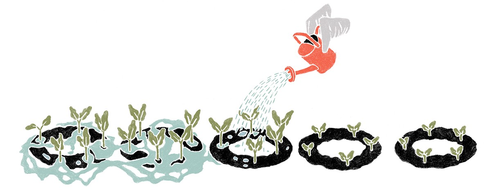

El momento en que me enamoré del mundo de las startups
July 29, 2015
11 años atrás, yo era la vicepresidenta de marketing en un banco. Estaba aburrida con el trabajo y cansada de hacer comunicados de prensa que no me interesaban. Una noche, terminé en una fiesta donde no conocía ni a un alma. Había ido con planes de verme con un amigo. — sólo que cuando llegué, me dijeron que estaba en Arkansas acompañado a Wesley Clark en su campaña presidencial. Quería irme a casa - Casi lo hago - Pero en el último minuto decidí quedarme unas horas más.
Terminé hablando con Paul Graham, el anfitrión de la fiesta. El era programador — programó Viaweb, una compañia que que permitía a las personas construir y administrar sus propias tiendas virtuales.
Él y sus amigos me hicieron una pequeña introducción al mundo de las startups. Nunca había estado tan en contacto con ellos y no entendía muchos de los conceptos que estaban por detrás o que hacía tan exitosas las startups. Estaba tan intrigada que decidí seguir con un proyecto alterno - un libro, eso esperaba - sobre startups. Yo quería ayudar a que las personas entendieran como otros fundadores habían alcanzado el éxito. Decidí llamarlo Founders at Work, basado en las serie francesa de "Writers at Work", esto me llevó a entrevistar varios fundadores y preguntarles sobre los primeros días de sus startups.
Entrevisté a personas como Steve Wozniak (Apple), Craig Newmark (Craigslist), y Max Levchin (PayPal). Aprendí más de lo que creía trabajando en el libro. Y otras cosas más:
Existe otra forma de hacer las cosas diferente a como las hacen en Wall Street.
Este nuevo mundo no solo es más exitante sino también más gratificante intelectualmente.
Apple empezó en un garaje y desde ahí se fue convirtiendo en una gran empresa, ellos no entendían todo lo que habían hecho mal en el principio. Y fueron esas lecciones las que hicieron a Apple la empresa que conocemos hoy.
Finalmente, la mayoría de las startups empiezan por accidente, no solo con una gran idea y gran financiamento.
 Toda lo que estaba descubriendo con las entrevistas fue tan interesante y sorpresivo que después de todo, me di cuenta que estaba dentro de algo grande. Inicialmente, solo quería inspirar a la gente pudiera poner en marcha sus propios proyectos y hacer que el inicio fuera mucho más transparente.
De lo que no me había dado cuenta es que fui inspirada por esas historias, y eso fue lo que me hizo lanzar mi propia startup. No sabía que ayudar a fundadores con sus ideas iba a ser el propósito de mi vida, y luego saber que varias de esas ideas han sido exitosas. (Paul y yo empezamos Y Combinator con Trevor [Blackwell] y Robert [Morris] como un proyecto divertido, darles a los fundadores una opción más estandarizada sobre qué es la inversión. Pero no estábamos tan seguros de que eso fuera a funcionar.)
Además iban ocurriendo otros "Accidentes" a lo largo del camino. Por ejemplo, cuando empezamos Y Combinator en 2005, hicimos un Programa de verano para fundadores con 8 startups. Nos decidimos a financiar un grupo de startups al mismo tiempo, porque ni Paul ni yo sabiamos nada sobre inversión angel y pensabamos que esa era la mejor manera de aprender. La idea era financiar una por una las startups después del verano. Pero nos dimos cuenta que era más efectivo financiar startups en grupos - tener lotes de startups que trabajaran juntas, de otra manera nos estaríamos esforzando demasiado por muy poco. Eso fue muy importante para crear y soportar una comunidad, y fuimos finanziando grupos desde entonces.
Desde Bill Gates hasta Larry Page y Sergey Brin empezaron desde la nada. Al principio nadie creía en sus ideas; ellos se enfrentaron al rechado y lucharon. Pero tenían la determinación de seguir adeltante cuando ninguno no les importaba. A través de Founder at Work quería ayudar a las personas que se sentían cohibidas y atrapadas en el mundo de los negocios; quería darles esperanza para que lucharan contra el rechazo y enseñarles como empezar su propia startup. Sabía que si yo podía ayudarlos, ayudaría al mundo a traer más innovación.
Paul y yo también estamos casados. Estoy muy feliz de haber ido a esa fiesta.